catalytic_reaction¶
Overview¶
This model defines the following ‘catalytic reaction’ system:
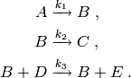
Here, the species  acts as a catalyst for the third
reaction. The rate constants are
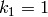, 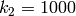 and 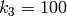,
while the initial species counts are
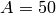, 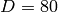 and 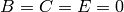.
acts as a catalyst for the third
reaction. The rate constants are
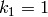, 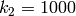 and 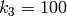,
while the initial species counts are
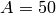, 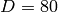 and 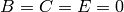.
This catalytic reaction system is taken from the paper by Mastny, Haseltine, Rawlings [MHR07] .
Running the model¶
This model is defined by the module cmepy.model.catalytic_reaction. The source code for this model is listed below.
The model solves the distribution over a sparse, truncated state space. For more information, see Sparse state spaces.
To run this model, open the Python interpreter, and enter:
>>> from cmepy.models import catalytic_reaction
>>> catalytic_reaction.main()
This will solve the model and then produce the following plot, illustrating
the marginal distribution of species count of  at the times
at the times
 .
.
Sample results¶

Source¶
"""
A simple catalytic reaction example.
Consider the following 'catalytic' reaction system:
A --k_1--> B
B --k_2--> C
B + D --k_3--> B + E
Here, the species B acts as a catalyst for the third
reaction. The rate constants are
k_1 = 1, k_2 = 1000, k_3 = 100;
while the initial species counts are
A = 50, D = 80, B = C = E = 0.
This system is taken from the paper
Mastny, E.A., Haseltine, E.L. and Rawlings, J.B.
Two classes of quasi-steady-state model reductions for stochastic kinetics,
The Journal of Chemical Physics, 2007, Vol 127 .
"""
import numpy
import pylab
import cmepy.domain
import cmepy.model
import cmepy.solver
import cmepy.recorder
from cmepy.util import non_neg, consecutive_pairs
def gen_states(**initial_counts):
"""
gen_states(**initial_counts) -> first state, ..., last state
Creates a generator over states in a *truncated* reaction count state
space, for the catalytic reaction example.
If specified, the optional keyword arguments A (defaults to 50) and
D (defaults to 80) define the initial copy counts of species A and D
respectively.
Each state yielded by this generator has the form state = (r_1, r_2, r_3),
where non-negative integers r_1, r_2 and r_3 denote the count of the
reactions 1, 2 and 3, respectively.
Only states satisfying the following inequality are considered:
(r_1, r_2, r_3) such that r_1 -3 <= r_2 <= r_1
The upper bound on r_2 follows from the model, as reaction 2 may occur at
most once for each occurance of reaction 1. The lower bound on r_2 is an
*artificial restriction that truncates the state space*. This introduces
error, but because the rate constant of reaction 2 is 1000 times larger
than the rate constant of reaction 1, the count of reaction 2 shall be
close to the count of reaction 1 with high probability, and the
resulting truncation error shall be small. This results in a truncated
state space with roughly 4 * (A+1) * (D+1) states, compared to the
0.5 * (A+1)**2 * (D+1) states required for the full state space.
"""
initial_counts.setdefault('A', 50)
initial_counts.setdefault('D', 80)
for r_1 in xrange(initial_counts['A'] + 1):
r_2_min = non_neg(r_1 - 3)
r_2_max = r_1
for r_2 in xrange(r_2_min, r_2_max + 1):
for r_3 in xrange(initial_counts['D'] + 1):
yield (r_1, r_2, r_3)
return
def create_model(**initial_counts):
"""
create_model(**initial_counts) -> model
Creates a model for the catalytic reaction example.
If specified, the optional keyword arguments A (defaults to 50) and
D (defaults to 80) define the initial copy counts of species A and D
respectively.
"""
initial_counts.setdefault('A', 50)
initial_counts.setdefault('D', 80)
s_1 = lambda *x : non_neg(initial_counts['A']-x[0])
s_2 = lambda *x : non_neg(x[0] - x[1])
s_3 = lambda *x : x[1]
s_4 = lambda *x : non_neg(initial_counts['D']-x[2])
s_5 = lambda *x : x[2]
return cmepy.model.create(
name = 'simple catalytic reaction',
reactions = (
'A->B',
'B->C',
'B+D->B+E'
),
propensities = (
lambda *x : 1.0 * s_1(*x),
lambda *x : 1000.0 * s_2(*x),
lambda *x : 100.0 * s_4(*x) * s_2(*x)
),
transitions = (
(1, 0, 0),
(0, 1, 0),
(0, 0, 1)
),
species = (
'A',
'B',
'C',
'D',
'E'
),
species_counts = (
s_1,
s_2,
s_3,
s_4,
s_5
),
shape = (initial_counts['A'] + 1, )*2 + (initial_counts['D'] + 1,),
initial_state = (0, )*3
)
def main():
"""
Solves the CME for a simple catalytic reaction and plot results
"""
initial_counts = {
'A' : 50,
'D' : 80
}
# define the model
model = create_model(**initial_counts)
# create cme solver
solver = cmepy.solver.create(
model,
sink = True,
domain_states = cmepy.domain.from_iter(gen_states(**initial_counts))
)
# create cme recorder, specifying that we wish to measure the
# species random variables, via the species_counts functions,
# and also the reactions random variables, via the default
# coordinate projections
recorder = cmepy.recorder.create(
(model.species, model.species_counts),
(model.reactions, )
)
step_size = 0.005
times = (0.0, 0.05, 0.2, 0.5)
limits = consecutive_pairs(times)
intervals = (numpy.linspace(a, b, (b-a)/step_size + 1) for a,b in limits)
for interval in intervals:
for t in interval:
solver.step(t)
p, p_sink = solver.y
print 'time : %.3f, truncation error: %.1e' % (t, p_sink)
print 'recording results'
recorder.write(interval[-1], p)
print 'plotting results'
marginal_shape = (initial_counts['D']+1, )
measurement = recorder['E']
pylab.figure()
for time, marginal in zip(measurement.times, measurement.distributions):
pylab.plot(
marginal.to_dense(marginal_shape),
label = 't = %.2f' % time
)
pylab.legend()
pylab.title('probability distribution of E')
pylab.ylabel('P(E)')
pylab.xlabel('E (copy count)')
pylab.show()
References
| [MHR07] | Mastny, E.A., Haseltine, E.L. and Rawlings, J.B., Two classes of quasi-steady-state model reductions for stochastic kinetics, Journal of Chemical Physics (2007), Vol 127. |